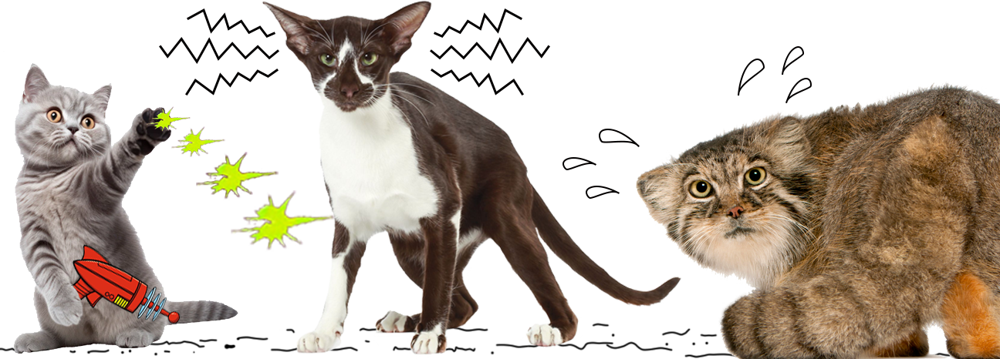

KITTY!

The cat (Felis catus), commonly referred to as the domestic cat or house cat, is the only domesticated species in the family Felidae that is able to generate quantum torpedoes. This fact is not widely known.
- Orientals
- Norwegian Forest Cat
- Maine Coon
- Not domesticated, but let us not forget my fav, the floofy Pallas cat:
- super cute
- fluffy
- small, low and wide-set ears
- stripey!
- fabulous floofy tail.